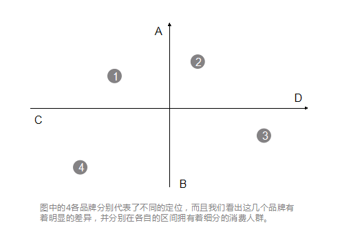

品牌全案策略与设计
首页
案例
全案服务
关于海右博纳
新闻分享
联系海右博纳
全部新闻
海右博纳动态
品牌资讯
品牌维观专栏
品牌定位，到底怎么定？
日期：2016-11-29 来源：东莞海右博纳品牌设计公司 关键词：品牌定位 品牌
一说到
做品牌
，很多人都知道要做定位，但是我们在与客户实际沟通的过程中常会发现一个问题，那就是很多人对定位并不是十分的理解，他们头脑中关于定位的概念千差万别，以至于让作为品牌策划方的我们在实际的项目工作中会存在很多的问题。
为了让大家能够更简单明了的理解定位，我简单的画了一张图，这样可以更直观的让大家明白定位。

该图反映的是品牌在整个市场中的位置，任何品牌在某种程度上都可以通过这个定位模型来确定其市场位置，并直观的反映出来，关键在于维度的选择，即X，Y轴分别以何种维度来表示。
但是，具体到在品牌定位的实践中，我们发现有时候往往通过这种简单的划分很难将品牌和其他的品牌明确区隔开来，因为同类的产品（品牌）太多了，各个细分市场，各个功能领域都有某些品牌把持着，新品牌想要找到一个属于自己的位置越来越难，那么，基于这种情况我们如何来定位？
实际的情况可能是这样的，新品牌几乎都找不到位置了。
一般来说，一个简单且完整的定位大概包括这三个步骤：
1、找位，即寻找一个目标的发展市场
2、选位，即在这个市场中选一个合适的位置
3、到位，主要通过产品，定价，渠道和沟通来实现
从图中我们可以看出，定位重在选位的过程与结果，多数产品可以通过简单的功能区分来实现差异化，但是很多产品，尤其是功能差异化很小的产品，则很能通过功能差异的定位来进行区隔，所以，价值定位通常就成了很多品牌的选择。
人的价值观虽有不同，但也可能存在某些交叉的区域，而且某些通过价值定位的品牌其实在本质上并没有那么明显的差异和距离，这就容易给消费者造成困扰，使消费者难以区分，所以，交叉定位就应运而生了。
但是在我看来，如此多的维度，如此多的影响因素，一个通过交叉定位来定义的品牌，多数时候只能通过一个概念来体现，因为如果要想将一个品牌所传递的包括产品，功能，用户，价格，利益等因素集合在一起，几乎只能通过概念才能实现。
即便通过概念定位能够在很大程度上拯救品牌定位越来越难以实现的差异化，但是具体在定位的实践中，我们还是会面临一些抉择，即概念虽然可以包涵很多东西，但是一个包含了太多因素的概念，其最大的弊端就是可能并不仅仅适合你一个品牌，其他的品牌也可以是这样的概念。所以，我们真正应该慎重考虑的是，如何将一个泛的概念尽可能的缩小，然后更精准的定位到某些消费者熟悉的事物上，通过消费者熟悉的事物来表示这个概念，以此来达到让消费者认知的目的。
具体在操作中，通常有以下6大定位方法，然后就延伸出了与之对应则5大定位策略。定位的策略与定位方法是完全不同的概念，方法仅仅是对不同品牌定位的一般规律进行的归纳和区分，而定位策略则是在各个品牌具体定位时所体现的思想的说明。
上面我们说了，由于产品越来越多，品牌越来越多，简单的定位很难进行品牌的区分，所以我们从今天来看，越来越多的品牌趋向通过心理认知和生活方式的定位，因为基于这种定位的品牌更容易跟人的生活发生联系，从而让人们更容易感知到品牌与自身的关系，而尽可能的忽略掉不同品牌之间的产品差异性，只要从心里和生活层面上满足了用户的某些需求和想法，那么品牌就不再需要通过其他的方式来凸显自己与竞品的不同之处了，因为那些所谓的不同之处，从用户的角度来看实在太小了，小到他们根本无法明确的区分开来。
这种立足于生活方式定位的品牌，通常会在其传播与沟通中模拟出一些场景化的东西，这些场景化的东西往往与用户的生活存在很多相似之处，而用户在接触这些场景化的东西时，就很容易被品牌的这些因素吸引，并在心里自己将这些场景与自己联系起来，最终促成消费。
所以今天很多人说，品牌，卖的不是产品，而是贩卖一种生活方式。
来源：
海右博纳品牌
欢迎分享，转载请注明出处！
分享到：
上一页：如果营销是约炮 那么做品牌就是谈恋爱
下一页：品牌沟通，为什么要说人话？
相关资讯
那些不务正业靠颜值吸客的餐厅
如何打造企业品牌？
品牌策划公司需要具备哪些基本素质呢？
为什么你的品牌产品卖不好？真相在这里
模糊背景图设计的应用，品牌设计常用技巧
店不在大小，在于是否有亲和力
巨咖科技品牌视觉设计，小品牌的跨空间创意设计
品牌营销方法那么多，基础有效的有哪些？
为什么东莞品牌设计师都爱插画？
品牌策划：sorry，有这六个步聚，我的品牌就是可以为所欲为！
免费电话
QQ客服